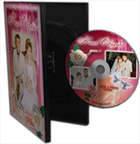

Услуги и оборудование
В мои услуги входит :
- создание свадебного фильма - 60-90 мин - свадебный клип - 3-5 мин По желанию: - до свадебная съемка Lovestory - видеоприглашение - ... другие пожелания
Видеоматериал передается в трех экземплярах на дисках DVD и Blu-ray, с индивидурльным дизайном обложки.
Возможна передача обработанного материала на любом другом носителе.
Съемка производится на профессиональном оборудоваии :
- Камера Sony NX-5 - DSLR съемка на Canon 5D Mark3 и Canon 550D, сменнные объективы - Использование дополнительного света - Профессиональный звук: микрофон RODE, внешний рекордер ZOOM H2n - Слайдер (мини рельса) - Стедикам - ... и другое дополнительное оборудование.
Вся съемкка осуществляется в максимальном качестве (Full HD /1920 x 1080). Обработка отснятого видео- и аудиоматериала производится в программах нелинейного монтажа, цветовой коррекции и визуализации эффектов.